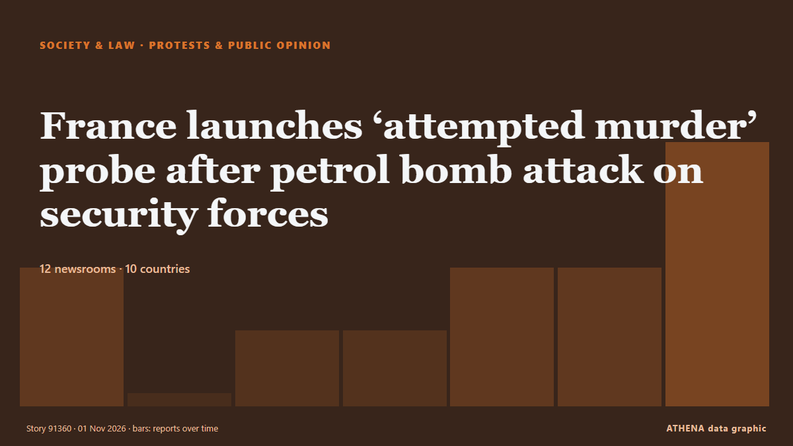

Société, droit et politiques publiques
Les titres sont affichés en anglais, tels que publiés.

Manifestations et opinionFrance launches ‘attempted murder’ probe after petrol bomb attack on security forces
French authorities have initiated an attempted murder investigation after a petrol bomb was thrown at police during protests in Paris. de Arab News
| 19 oct. | 145 |
|---|---|
| 20 oct. | 45 |
| 21 oct. | 115 |
| 22 oct. | 222 |
| 23 oct. | 188 |
| 24 oct. | 120 |
| 25 oct. | 131 |
| 26 oct. | 318 |
| 27 oct. | 308 |
| 28 oct. | 288 |
| 29 oct. | 259 |
| 30 oct. | 290 |
| 31 oct. | 119 |
| 1 nov. | 76 |
UK police say 325 people were arrested at Palestine Action demo
UK police arrested 325 demonstrators at a protest in support of Palestine Action outside the US embassy in London. de Arab News
Police probe Jeffrey Epstein’s time spent at Balmoral with Andrew Mountbatten-Windsor
Scottish police are investigating the time convicted sex offender Jeffrey Epstein spent with Andrew Mountbatten-Windsor at Balmoral, a private royal estate in Scotland which is a favored retreat for… de Egypt Independent
Poland's Constitutional Court crisis deepens as judges allege coup attempt
Poland has been plunged into a constitutional confrontation after police entered the Constitutional Tribunal and its president was reportedly suspended from office, prompting allegations of a coup… de AzerNews
Police watchdog to open probe over letter about Meghan Markle's father
The Metropolitan Police acknowledged receiving a letter in 2019 regarding accusations about Meghan Markle’s father but did not share this information with other law agencies. de Arab News
New York City Mayor Mamdani secures Trump’s approval for visa for mother of slain Ghanaian teenager in Bronx
The mother of 15-year-old Ghanaian student Javits Frimpong, who was fatally shot while walking to school in New York, will be granted a visa to travel to the United States following an intervention… de MyJoyOnline
France deploys 70,000 police officers to prepare for new wave of protests on Halloween
Emmanuel Macron's government deploys 70,000 police officers as France braces for a third week of intense protests amid over $1 billion in losses. de Fox News (World)
Polish president calls crisis talks after court standoff
Karol Nawrocki cut short a trip to Senegal and returned to Warsaw. de Euractiv
Third weekend of protests in France as youth-led rallies sweep Europe
The Interior Ministry told reporters that 70,000 people are estimated to have turned out for the main protest in Paris. de The Irish News (Belfast)
Spanish village gathers for memorial Mass for train crash victims
Investigators are looking into the cause of one of Europe's deadliest rail disasters this century. de CNA (Channel NewsAsia)
Poland FM: Tribunal move 'not elegant,' but necessary
Poland's Foreign Minister Radoslaw Sikorski stated on Saturday that last night's police deployment at the Polish Constitutional Tribunal in Warsaw was "not elegant," but still better than an… de AzerNews
EU’s new levy on parcels kicks in
BRUSSELS, Belgium: The European Union imposed a two-euro (US$2.25) handling fee on packages from outside the 27-nation bloc on Sunday in a bid to curb the influx from China. de New Straits Times
Sarkodie mourns Ghanaian teenager shot dead in New York
Ghanaian rapper Michael Owusu Addo, popularly known as Sarkodie, has expressed sorrow over the death of a Ghanaian teenager, Javits, who was reportedly shot in the abdomen while walking near a school… de MyJoyOnline
Hong Kong has released the full report on Tai Po fire tragedy. Here’s all you need to know
We have put together 10 stories from our coverage on the full report of the Wang Fuk Court fire, released almost a year since the tragedy claimed 168 lives. de South China Morning Post
India helicopter crash in Himalayas kills 6
Police said efforts were under way to recover the bodies from the remote crash site, while the cause of the accident remained unknown. de Free Malaysia Today
Mass protests sweep Italy during nationwide strike
Grassroots union Unione Sindacale di Base called 24-hour general strike, with protests planned in more than 40 cities. de Express Tribune
Gen Z protests reach Germany as over 160,000 expected at Halloween rallies
Demands include opposing compulsory military service and investing in education amid rising costs. de The Straits Times
Polish riot police deployed after court chief suspended
The court frequently ruled in favour of Polish legislation over European Union law. de Euractiv
DSI probes relatives of Chabad leader Kantor and 19 firms
Relatives of the Chabad network’s leader in Thailand, 19 companies linked to him and his land holdings are now under investigation, after the government revoked his Thai citizenship. de The Thaiger
Third weekend of protests in France as youth-led rallies sweep Europe
The Interior Ministry told reporters that 70,000 people are estimated to have turned out for the main protest in Paris. de The Irish News (Belfast)
New York state police to take over sexual assault complaints at Cornell University
New York state police will take over future sexual assault investigations at Cornell University, Governor Kathy Hochul said… de BusinessWorld
Seoul fears being sidelined as US reaches out to North Korea
With ties between South Korea and the Trump administration strained, the South Korean government worries that Donald Trump's pursuit of a diplomatic breakthrough with Kim Jong Un may come at Seoul's… de DW English
Fears of violence as France braces for Halloween protests
France will deploy some 70,000 police officers in Paris and other cities ahead of a new round of nationwide protests on Saturday, with Interior Minister Laurent Nuñez warning of a "very high risk of… de France 24 English
'We don't work for war': Dockworkers strike at 113 ports across 5 continents
Strikes take place in countries including Greece, France, Italy, India, Türkiye, Germany, opposing arms transfers to Israel. de Anadolu Agency (English)
Poland's president returns as court crisis escalates
Polish President Karol Nawrocki turned back to Poland while en route to Senegal after a far-right ally was suspended as head of the country's top court. de RTÉ News
Humanitarian aid being delivered to Oleshky, 25 buses with 750 seats ready for evacuation – Lubinets
Ukraine's Human Rights Commissioner, Dmytro Lubinets, said that 25 buses with a total capacity of 750 seats had been prepared to evacuate residents of Oleshky, along with ambulances for people with… de Ukrinform (English)
UN Refugee Agency Says 9 Million Need Extra Winter Help
The UN refugee agency highlights the need for extra winter assistance for nine million people across Ukraine, Syria, Lebanon, and Afghanistan, seeking $50 million in donations. de Arab News
South Korea seeks criminal charges, 3-year exam ban for cheating with AI glasses
Authorities are stepping up efforts to tackle cheating involving the devices following a series of incidents this year. de CNA (Channel NewsAsia)
Iran court sentences award-winning filmmaker Jafar Panahi to 5 years in prison
The 66-year-old won the top prize in the 2025 Cannes film festival for It Was Just An Accident. de The Straits Times
A helicopter with the EU force in Bosnia crashes, reportedly killing 3 and injuring 12
A Italian helicopter of the European Union peacekeeping force in Bosnia has crashed in the country’s north. de ABC News (International)
Plaka Explosion: Three Suspects Linked to 80 Police Cases
Three men arrested over the Plaka explosion that killed six people are linked to nearly 80 previous police cases, according to Greek reports. de Greek City Times
Europeans and Canadians set to get more opportunities to move across Atlantic
The European Union and Canada are set to announce on Friday a new strategic alliance that will include more opportunities for Canadians and Europeans to live and study and work on the opposite side… de The Local Switzerland
Mushroom killer Erin Patterson emotionless as appeal dismissed
Mushroom killer Erin Patterson is likely to die behind bars after Victoria’s Court of Appeal quashed her bid to overturn her triple murder conviction. de Sydney Morning Herald
Thousands of students and workers protest in Italy under heavy security
Thousands of students and workers took to the streets across Italy on Friday, calling for more school funding and relief from the soaring cost of living, amid a high police presence to avert possible… de The Local Italy
Spain’s transport minister refuses to resign over Toledo train crash as elections loom
Oscar Puente ruled out stepping down at a press conference at the Transport Ministry in Madrid on Friday. de The Olive Press